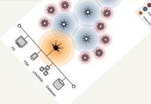

Our Research
ChipSoftTech is the site of pioneering work across all the three pillars: Research, Data, Sensors. Today’s research increasingly transcends disciplinary boundaries, and ChipSoftTech excels in this new environment, with leading research centers in fields such as data mining, evolutionary algorithms, and sensor deployment.
ChipSoftTech researchers benefit greatly from the company’s longstanding ties with Universities and National Laboratories. In 2008-09, ChipSoftTech received grants in research funding from government agencies, foundations and corporate partners.
Descriptions of our projects and grants may be viewed below. Contact us for additional information and research opportunities at ChipSoftTech.

PondWater Development Strategy™
The PondWater Development Strategy™ consists of the PondWater Expert System © and our proven Process Tools that when utilized in tandem, have the power to change the way you do business.
Sensor Deployment Problem
Existing approaches for determining the optimal deployment positions of sensors, referred to as the Sensor Deployment Problem (SDP), suffer from a number of critical drawbacks. First, homogeneous deployment models have been commonly assumed, but in practice deployments of heterogenous sensors are typical. Second, existing approaches assume isotropic sensing ranges but it has been found that hardware and environmental conditions cause imperfections in sensing. Third, existing models are very application-dependent.
We propose an extensible modeling framework for the problem of determining optimal deployment positions for a set of heterogeneous, nonisotropic sensors to cover a set of points in an area. The problem is formulated using a genetic algorithm where the objective is to minimize the cost to cover all points. Our technique is to decouple the coverage determination method from the sensor deployment model. This allows the sensor deployment model to remain consistent and address the critical drawbacks of previous models. A homeland security application is presented to illustrate the capabilities of our approach.
The SDP has received a great deal of focus in sensor network research. We presented a probabilistic extension to our model at the IEEE Sensors Applications Symposium (SAS) 2009 titled: A Probabilistic Model for the Deployment of Sensors as an extension to our foundation model presented at SAS 2008 (An Extensible Model for the Deployment of Non-Isotropic Sensors).
The Game of Deployment
Games are often used as a tool for teaching the elements and strategies of a problem. Our objective is to define the sensor deployment problem as a game. The rules, game mechanics, and attributes are defined to abstract real life deployment situations while lowering the learning time to allow study of complex scenarios.
Watch as our research evolves. We define the fundamentals of the game and challenge the community to study, solve, and define new strategies for sensor deployment problems. It is a fun and simple game, which has an element of entertainment, yet provides a foundation and framework for studying optimization problems.
As part of the game, we are interested in compiling strategies used along with additional challenges. Revisit this site for a list of board game examples and submitted solutions. Compare your best scores to what others have found. Submit your ideas, example games, challenges, and solutions so we can evolve "The Game of Deployment". We are gathering such statistics as number of unique visitors, number of games added, number of scores submitted, mapping of score evolution and improvements, and other metrics that may help students and researchers.
Submit your game boards, solutions, and ideas. If you have questions or comments, please let us know.
Dr. Carter presented the game at the IEEE Sensors Application Symposium. For research information and advanced topics, download The Game of Deployment paper.
SNITTER
SNITTER is a Sensor Network Investigation Toolkit To Enable Research. With so many COTS sensors available, SNITTER is a toolkit that integrates the sensor readings into a standard RSS format.
Message Transformation Services, a key component of SNITTER, was published and presented at the 2006 World Congress in Computer Science, Computer Engineering, and Applied Computing (WORLDCOMP).
Autonomous
At ChipSoftTech, we are always researching new ways to automate your business. The concept of "swarming" your content is of interest in our current research.
Our initial research "Kinesis-based Swarming Scheme for Mobile Sensors" is an approach presented at the IEEE Swarm Intelligence Symposium 2006 to find a source based on global and local best values. We hope to provide similar search features in our portal offerings.
Brian Carter's Blog
See Dr. Carter's latest work on his blog http://brian.ChipSoftTech.com.